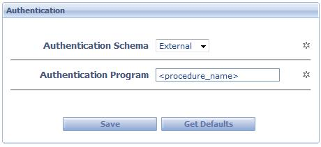

DescriptionScheme to be used to authenticate the users.  Preferences
Default: GXflow
<Procedure_name> must be like this: .NET: <Class Name Fullyqualified>,<Assembly Name> Ex: “GeneXus.Programs.aauthenticationProcedure,aauthenticationProcedure.dll” JAVA: procedure class name The procedure specified here has to be like this: parm(in:&UserId, in:&UserPassword, out:&error); where: &UserId is based on the WorkflowUserId domain - &UserPassword is based on WorkflowPassword domain - &error is Numeric (4): returns the result of the user evaluation. The engine also verifies if the user is nominated. Possible values to return are: 0: valid user and password. 9998: Incorrect user or password 9995: Access denied Note: You must be responsible of compiling the procedure.
|